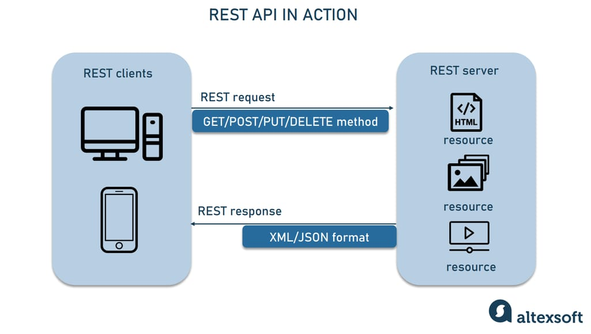
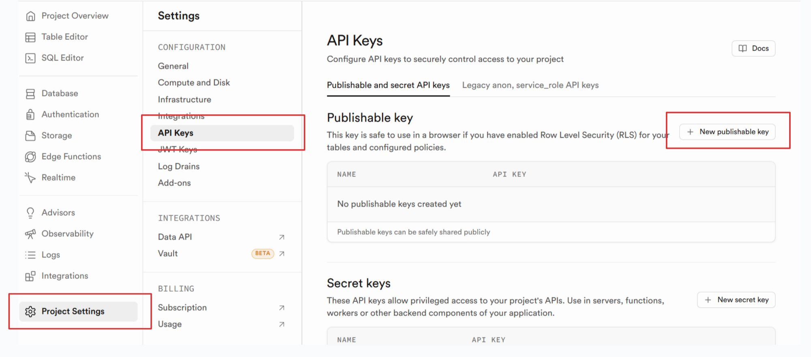
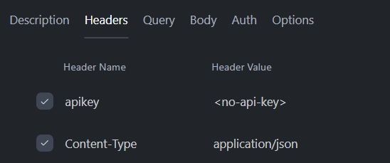
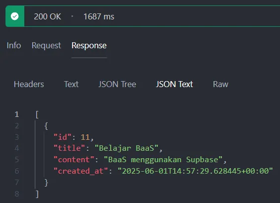
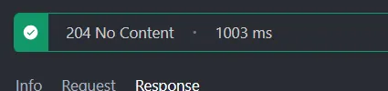

PERTEMUAN 12
📂 REST API


Apa itu REST API?
REST API (Representational State Transfer Application Programming Interface) adalah suatu cara agar aplikasi bisa berkomunikasi dan bertukar data melalui internet dalam format JSON.
Dalam imlementasi, akan ada REST Clients sebagai aplikasi/sistem yang membutuhkan data dan REST Server sebagai penyedia data.
Komponen Utama REST API
Resource (Data)
- Segala sesuatu yang bisa diakses: contoh
users,posts,products,video,image
- Biasanya diakses lewat URL / Endpoint seperti:
https://api.example.com/users/1
HTTP Method (Aksi)
Digunakan untuk menentukan aksi terhadap data:
GET→ ambil data
POST→ kirim data baru
PUT→ update data
DELETE→ hapus data
Request & Response
- Request dikirim oleh aplikasi (klien) ke server.
- Response adalah jawaban dari server, biasanya dalam bentuk JSON.
Headers dan Body
- Headers berisi info tambahan (misal format data atau token).
- Body berisi isi data (khusus untuk
POSTatauPUT).
Hubungannya dengan Android?
Android, secara umum akan bertindak sebagai REST Client yang akan mengambil data (GET) atau mengirim data (POST/PUT/PATCH/DELETE) ke server, seperti:
- Menampilkan daftar berita dari internet
- Mengirim data pendaftaran pengguna
- Menyimpan catatan ke server
Untuk melakukan hal tersebut, Android butuh mengakses REST API yang disediakan oleh server. Salah satu package yang dapat melakukan hal tersebut ialah Retrofit.
📂 Backend As A Service (Baas)
BaaS merupakan suatu layanan yang menyediakan bagian backend dari aplikasi seperti database, autentikasi, dan file_storage tanpa harus membuat semuanya dari awal.
BaaS sangat cocok untuk developer yang hanya ingin fokus di bagian frontend tanpa harus memikirkan bagian backend.

Salah satu Baas yang akan kita bahas ialah https://supabase.com/

Supabase merupakan salah satu platform BaaS yang mirip seperti Firebase, tapi berbasis open-source dan menggunakan PostgreSQL sebagai databasenya. Supabase lengkap dengan fitur BaaS umum seperti Database, REST API, Authentication, Storage dll.
Silahkan ikuti langkah berikut:
1️⃣ Sign In, Create Organization dan New Project
Klik sign in, jika punya akun GitHub, bisa langsung “Continue With GitHub”.
jika ingin membuat akun dengan email, klik “Sign Up Now” dan ikuti langkah-langkah yang tersedia

Jika sudah membuat akun, kita akan diminta untuk Create Organizaton. Biarkan isian yang ada lalu Klik “Create Organization”

Selanjutnya kita akan Create New Project. Silahkan isi form berikut:
- Project Name
(isi sesuai aplikasi)
- Database Password
(bisa klik Generate Password)
- Region Server
(pilih server terdekat, seperti singapore)
Lalu klik “Create New Project”

Tampilan awal setelah membuat project baru

2️⃣ Buat table baru note (Turn Off RLS)
Pada bagian sidebar, pilih Table Editor → klik “Create New Table” → beri nama table note


Jangan ceklis pada bagian “Enable Row Level Security”, jika ada prompt, klik Confirm.


Isi detail tabel sebagai berikut:
| Field Name | Type | Description |
|---|---|---|
id | int8 | Primary key, Is Unique, Is Identity |
title | text | Judul catatan |
content | text | Isi catatan |
status | varchar 20 | To Do/On Progress/Done |
created_at | timestamp | Auto-timestamp saat dibuat |
Hasil akhir tabel seperti berikut, jika sudah sesuai, klik “Save”

3️⃣ REST API untuk table note
Supabase secara otomatis menyediakan REST API untuk setiap table.
Beberapa hal yang perlu diketahui:
- Project URL (Integration → Data API → API URL)

Simpan API URL sebagai url project supabase
- Apikey (Project Settings → API Keys → Publishable Key)
Selanjutnya kita akan membuat publishable API KEY

Silahkan isi dengan nama “apikey” lalu klik “Create Publishable API Key”

Jika sudah berhasil, silahakan di copy apikey untuk kita gunakan nanti


4️⃣ Test API
Kita coba lakukan testing apakah REST API ini berfungsi dengan baik menggunakan extension RapidAPI di vscode:
Pastikan setiap melakukan request memiliki Header sebagai berikut:



Jika berhasil maka akan mendapat respon seperti berikut:

5️⃣ Test CRUD
Menambah Data - POST
POST→ https://<API-URL>/note
Body, isikan value JSON berikut:{ "title": "Belajar BaaS", "content": "BaaS menggunakan Supbase" }

- Klik “Send”, maka akan diterima respon code
201 - Createdyang artinya data berhasil ditambahkan. Cek Table Editor untuk melihat data yang baru
Mengambil Data - GET
GET→ https://<API-URL>/note
Bodydikosongkan
- Klik “Send”, maka akan diterima respon code
200 - OKyang artinya data berhasil didapatkan

Memperbaharui Data - PATCH
PATCH→ https://<API-URL>/note
Body: Isi dengan data JSON yang ingin diubah. Contoh: mengganti nilaititledari data yang sudah ada.{ "title": "Belajar BaaS di PCR" }
Query: isi denganid, dan beri value sesuaiiddata yang ingin diperbarui.
id : eq.11→ cari data denganidyang sama dengan11.eq adalah singkatan dari equal (sama dengan).
Jadi
id=eq.11artinya: id sama dengan 11.
- Klik "Send", jika berhasil akan muncul respon
204 (No Content)

Menghapus Data - DELETE
DELETE→ https://<API-URL>/note
Body: dikosongkan
Query: isi denganid, dan beri value sesuaiiddata yang ingin diperbarui.id : eq.11→ cari data denganidyang sama dengan11.eq adalah singkatan dari equal (sama dengan).
Jadi
id=eq.11artinya: id sama dengan 11.
📂 Retrofit - catfact.ninja
Kita akan menggunakan Retrofit untuk mengambil data dari REST API terkait fakta kucing dari URL berikut:
Jika diakses, maka akan memberi output data JSON dengan format berikut:
{
"fact": "Cats sleep for 70% of their lives.",
"length": 36
}
1️⃣ Install Dependency Retrofit di build.gradle (Module)
implementation ("com.squareup.retrofit2:retrofit:2.9.0")
implementation ("com.squareup.retrofit2:converter-gson:2.9.0")
implementation ("org.jetbrains.kotlinx:kotlinx-coroutines-android:1.7.3")Lalu klik “Sync Now”
2️⃣ Pada package data/model, buat Kotlin Data Class CatFactModel
data/model/CatFactModel.kt
data class CatFactModel(
val fact: String,
val length: Int
)
3️⃣ Pada package data/api, buat Kotlin Interface Class dan Object Class file berikut:
data/api/CatFactApiService.kt
interface CatFactApiService {
@GET("fact")
suspend fun getCatFact(): CatFactModel
}data/api/CatFactApiClient.kt
object CatFactApiClient {
private const val BASE_URL = "https://catfact.ninja"
val apiService: CatFactApiService by lazy {
Retrofit.Builder()
.baseUrl(BASE_URL)
.addConverterFactory(GsonConverterFactory.create())
.build()
.create(CatFactApiService::class.java)
}
}
4️⃣ Pada layout fragment_home, tambahkan textView tvCatFact dan button btnRefresh
<TextView
android:id="@+id/tvCatFact"
android:layout_width="match_parent"
android:layout_height="wrap_content"
android:layout_marginTop="100dp"
android:gravity="center"
android:text="Loading cat fact..."
android:textAlignment="center"
android:textSize="18sp" />
<Button
android:id="@+id/btnRefresh"
android:layout_width="wrap_content"
android:layout_height="wrap_content"
android:layout_marginTop="12dp"
android:text="Refresh"
app:layout_constraintTop_toBottomOf="@+id/tvCatFact" />

5️⃣ Pada FragmentHome, tambahkan function loadCatFact() dan panggil di onViewCreated
override fun onViewCreated(...) {
...
loadCatFact()
}
private fun loadCatFact() {
lifecycleScope.launch {
try {
val response = CatFactApiClient.apiService.getCatFact()
binding.tvCatFact.text = "\"${response.fact}\""
} catch (e: Exception) {
binding.tvCatFact.text = "Gagal mengambil fakta kucing."
}
}
}Coba akses fragment lalu setiap berpindah halaman dan kembali ke FragmentHome maka Cat Fact akan terus ter-update
Jika pemanggilan API ingin dilakukan saat klik tombol Refresh, terapkan onCLickListenerpada tombol Refresh
override fun onViewCreated(...) {
...
binding.btnRefresh.setOnClickListener {
loadCatFact()
}
}
Hasil akhir:


📂 Retrofit - picsum.photos
Kita akan coba membuat halaman galeri photo yang berasal dari URL berikut:
Jika diakses, maka akan memberi output data JSON dengan format berikut:
[
{
"id": "0",
"author": "Alejandro Escamilla",
"width": 5000,
"height": 3333,
"url": "https://unsplash.com/photos/yC-Yzbqy7PY",
"download_url": "https://picsum.photos/id/0/5000/3333"
},
...,
...,
]
1️⃣ Pada package model, buat Kotlin Data Class berikut
data/model/PhotoModel.kt
data class PhotoModel(
val id: String,
val author: String,
val download_url: String
)
2️⃣ Pada package api, buat 2 file berikut:
data/api/PhotoApiService.kt
interface PhotoApiService {
@GET("list")
suspend fun getPhotos(): List<PhotoModel>
}data/api/PhotoApiClient.kt
object PhotoApiClient {
private const val BASE_URL = "https://picsum.photos/v2/"
val apiService: PhotoApiService by lazy {
Retrofit.Builder()
.baseUrl(BASE_URL)
.addConverterFactory(GsonConverterFactory.create())
.build()
.create(PhotoApiService::class.java)
}
}
3️⃣ Buat Layout Resource File item_photo.xml untuk desain list per item
res/layout/item_photo.xml
<androidx.constraintlayout.widget.ConstraintLayout xmlns:android="http://schemas.android.com/apk/res/android"
xmlns:app="http://schemas.android.com/apk/res-auto"
xmlns:tools="http://schemas.android.com/tools"
android:layout_width="match_parent"
android:layout_height="wrap_content"
android:orientation="vertical"
android:padding="8dp">
<ImageView
android:id="@+id/imgPhoto"
android:layout_width="match_parent"
android:layout_height="200dp"
android:scaleType="centerCrop"
app:layout_constraintEnd_toEndOf="parent"
app:layout_constraintStart_toStartOf="parent"
app:layout_constraintTop_toTopOf="parent" />
<TextView
android:id="@+id/tvAuthor"
android:layout_width="wrap_content"
android:layout_height="wrap_content"
android:layout_marginTop="8dp"
android:paddingTop="4dp"
android:text="Author"
android:textSize="16sp"
app:layout_constraintEnd_toEndOf="parent"
app:layout_constraintHorizontal_bias="0.0"
app:layout_constraintStart_toStartOf="parent"
app:layout_constraintTop_toBottomOf="@+id/imgPhoto" />
</androidx.constraintlayout.widget.ConstraintLayout>4️⃣ Pada package Home, buat package baru bernama photo . Didalamnya, buat file berikut
Home/photo/PhotoAdapter.kt
class PhotoAdapter(private val items: List<PhotoModel>) : RecyclerView.Adapter<PhotoAdapter.PhotoViewHolder>() {
inner class PhotoViewHolder(val binding: ItemPhotoBinding) : RecyclerView.ViewHolder(binding.root)
override fun onCreateViewHolder(parent: ViewGroup, viewType: Int): PhotoViewHolder {
val binding = ItemPhotoBinding.inflate(LayoutInflater.from(parent.context), parent, false)
return PhotoViewHolder(binding)
}
override fun onBindViewHolder(holder: PhotoViewHolder, position: Int) {
val item = items[position]
holder.binding.tvAuthor.text = item.author
Glide.with(holder.itemView.context)
.load(item.download_url)
.into(holder.binding.imgPhoto)
}
override fun getItemCount(): Int = items.size
}RecyclerView Adapter bukan ListView atau pun Simple Adapter
5️⃣ Pada fragement_home.xml, tambahkan RecyclerView dan atur constraint-nya
Kita terapkan tepat dibawah btnRefresh
<!--Komponen Catfact sebelumnya -->
...
<androidx.recyclerview.widget.RecyclerView
android:id="@+id/rvGallery"
android:layout_width="match_parent"
android:layout_height="0dp"
android:layout_marginTop="16dp"
android:padding="8dp"
app:layout_constraintTop_toBottomOf="@+id/btnRefresh"/>
6️⃣ Pada FragmentHome, tambahkan function loadPhoto() dan panggil di onViewCreated
override fun onViewCreated(...) {
...
//loadFact()
...
//btnRefresh
...
loadPhoto()
}
private fun loadFact() {...}
private fun loadPhoto() {
lifecycleScope.launch {
try {
val photos = PhotoApiClient.apiService.getPhotos()
val adapter = PhotoAdapter(photos)
binding.rvGallery.adapter = adapter
/** List Tampil Vertical*/
binding.rvGallery.layoutManager = LinearLayoutManager(requireContext())
/** List Tampil Horizontal */
//binding.rvGallery.layoutManager = LinearLayoutManager(requireContext(), LinearLayoutManager.HORIZONTAL, false)
/** List Tampil Grid */
//binding.rvGallery.layoutManager = GridLayoutManager(requireContext(),2)
} catch (e: Exception) {
Toast.makeText(requireContext(), "Gagal memuat gambar", Toast.LENGTH_SHORT).show()
}
}
}
Hasil Akhir:

Gambar sudah berhasil muncul, tapi terkendala pada screen yang tidak bisa di scroll secara keseluruhan.
Kita perlu perbaiki masalah ini dengan menerapkan NestedScroll
Fix Scroll Issue
Kita akan perbaiki fragment_home.xml dengan menerapkan hal berikut:
- Terapkan
CoordinatorLayout(lihat kembali Pertemuan 7 bagain ListView)
- Hapus
Viewbergelombang
(karena kita akan menerapkan scroll maka komponen ini perlu di hapus. Silahkan explor lebih jauh jika tetap ingin menerapkanViewBergelombang +CoordinatorLayout)
- Terapkan
NestedScrollViewagar tampilan bisa di-scroll
- Pastikan RecyclerView menggunakan
layout_height = “wrap_content”
Penyesuaian fragment_home.xml
Perhatikan dengan seksama CoordinatorLayout , AppBarLayout , NestedScrollView
<?xml version="1.0" encoding="utf-8"?>
<androidx.coordinatorlayout.widget.CoordinatorLayout xmlns:android="http://schemas.android.com/apk/res/android"
...>
<com.google.android.material.appbar.AppBarLayout
android:id="@+id/appBarLayout"
android:layout_width="match_parent"
android:layout_height="wrap_content"
android:theme="@style/ThemeOverlay.AppCompat.Dark.ActionBar">
<androidx.appcompat.widget.Toolbar ... />
</com.google.android.material.appbar.AppBarLayout>
<!-- ISI SEMUA KONTEN -->
<androidx.core.widget.NestedScrollView
android:layout_width="match_parent"
android:layout_height="match_parent"
android:fillViewport="true"
app:layout_behavior="@string/appbar_scrolling_view_behavior">
<!-- Harus ada ConstraintLayout agar posisi Home kita tidak berubah -->
<androidx.constraintlayout.widget.ConstraintLayout
android:layout_width="match_parent"
android:layout_height="wrap_content"
android:padding="16dp">
<TextView
android:id="@+id/textView2"
.../>
<androidx.gridlayout.widget.GridLayout
android:id="@+id/grid_button"
...>
<TextView
android:id="@+id/tvCatFact"
... />
<Button
android:id="@+id/btnRefresh"
... />
<!-- Pastikan layout_height="0dp" untuk RecyclerView -->
<androidx.recyclerview.widget.RecyclerView
android:id="@+id/rvGallery"
android:layout_width="match_parent"
android:layout_height="0dp"
android:padding="8dp"
app:layout_constraintTop_toBottomOf="@+id/btnRefresh" />
</androidx.constraintlayout.widget.ConstraintLayout>
</androidx.core.widget.NestedScrollView>
</androidx.coordinatorlayout.widget.CoordinatorLayout>
Hasil Akhir setelah Penyesuaian:


RecylerView Mode (Horizontal & Grid)
Pada function loadPhoto(), sudah tersedia 2 jenis lainnya dalam menampilkan RecyclerView.

Mode Horizontal, maka hasil akhirnya akan sebagai berikut


Mode Grid, maka hasil akhirnya sebagai berikut